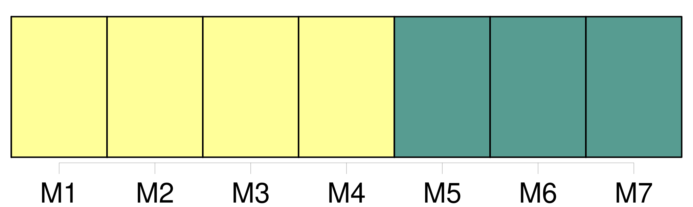

Longueur nb maillons : 32 mentions |
  |
[Du divorce] [3 phrases]
Des causes [du divorce] [1 phrases]
Le mari pourra demander [le divorce] pour cause d'adultère de sa femme. [1 phrases]
La femme pourra demander [le divorce] pour cause d'adultère de son mari, lorsqu'il aura tenu sa concubine dans la maison commune. [3 phrases]
La condamnation de l'un des époux à une peine infamante, sera pour l'autre époux une cause de [divorce] [1 phrases]
Le consentement mutuel et persévérant des époux, exprimé de la manière prescrite par la loi, sous les conditions et après les épreuves qu'elle détermine prouvera suffisamment que la vie commune leur est insupportable et qu'il existe, par rapport à eux une cause péremptoire de [divorce] [7 phrases]
Si quelques-uns des faits allégués par l'époux demandeur, donnent lieu à une poursuite criminelle de la part du ministère public, l'action en [divorce] restera suspendue jusqu'après le jugement du tribunal criminel ; alors elle pourra être reprise, sans qu'il soit permis d'inférer du jugement criminel aucune fin de non-recevoir ou exception préjudicielle contre l'époux demandeur. [1 phrases]
Toute demande en [divorce] détaillera les faits : elle sera remise, avec les pièces à l'appui, s'il y en a, au président du tribunal ou au juge qui en fera les fonctions, par l'époux demandeur en personne, à moins qu'il n'en soit empêché par maladie ; auquel cas, sur sa réquisition et le certificat de deux docteurs en médecine ou en chirurgie, ou de deux officiers de santé, le magistrat se transportera au domicile du demandeur pour y recevoir sa demande. [25 phrases]
En cas qu'elles soient trouvées concluantes, la demande en [divorce] sera rejetée : dans le cas contraire, ou s'il n'a pas été proposé de fins de non-recevoir, la demande en [divorce] sera admise. [1 phrases] Immédiatement après l'admission de la demande en [divorce] , sur le rapport du juge commis, le commissaire du Gouvernement entendu, le tribunal statuera au fond. [45 phrases]
L'époux demandeur qui aura laissé passer le délai de deux mois ci-dessus déterminé, sans appeler l'autre époux devant l'officier de l'état civil, sera déchu du bénéfice du jugement qu'il avait obtenu et ne pourra reprendre son action en [divorce] , sinon pour cause nouvelle ; auquel cas il pourra néanmoins faire valoir les anciennes causes. [1 phrases]
Des Mesures provisoires auxquelles peut donner lieu la Demande en [divorce] pour cause déterminée. [1 phrases]
L'administration provisoire des enfans restera au mari demandeur ou défendeur en [divorce] , à moins qu'il n'en soit autrement ordonné par le tribunal, sur la demande soit de la mère, soit de la famille, ou du commissaire du Gouvernement, pour le plus grand avantage des enfans. [1 phrases] Le femme demanderesse ou défenderesse en [divorce] , pourra quitter le domicile du mari pendant la poursuite, et demander une pension alimentaire proportionnée aux facultés du mari. [2 phrases]
La femme sera tenue de justifier de sa résidence dans la maison indiquée, toutes les fois qu'elle en sera requise : à défaut de cette justification, le mari pourra refuser la provision alimentaire, et, si la femme est demanderesse en [divorce] , la faire déclarer non recevable à continuer ses poursuites. [8 phrases]
L'action en [divorce] sera éteinte par la réconciliation des époux survenue soit depuis les faits qui auraient pu autoriser cette action soit depuis la demande en [divorce] [3 phrases]
Si le demandeur en [divorce] nie qu'il y ait eu réconciliation, le défendeur en fera la preuve, soit par écrit, soit par témoins, dans la forme prescrite en première section du présent chapitre. [20 phrases]
Le juge fera aux deux époux réunis, et à chacun d'eux en particulier, en présence des deux notaires, telles représentations et exhortations qu'il croira convenables ; il leur donnera lecture du chapitre IV du présent titre, qui règle Les effets [du Divorce] , et leur développera toutes les conséquences de leur démarche. [4 phrases] La déclaration authentique de leurs père et mère ou autres ascendans vivans, portant que, pour les causes à, eux connues, ils autorisent tel ou telle, leur fils ou fille, petit-fils ou petite-fille, marié ou mariée à tel ou telle, à demander [le divorce] et à [y] consentir. [28 phrases]
Des effets [du divorce] [10 phrases]
Pour quelque cause que [le divorce] ait lieu, hors le cas du consentement mutuel, l'époux contre lequel [le divorce] aura été admis, perdra tous les avantages que l'autre époux lui avait faits, soit par leur contrat de mariage, soit depuis le mariage contracté. [1 phrases]
L'époux qui aura obtenu [le divorce] , conservera les avantages à lui faits par l'autre époux, encore qu'ils aient été stipulés réciproques et que la réciprocité n'ait pas lieu. [1 phrases] Si les époux ne s'étaient fait aucun avantage, ou si ceux stipulés ne paraissaient pas suffisans pour assurer la subsistance de l'époux qui a obtenu [le divorce] , le tribunal pourra lui accorder, sur les biens de l'autre époux, une pension alimentaire, qui ne pourra excéder le tiers des revenus de cet autre époux. [2 phrases]
Les enfans seront confiés à l'époux qui a obtenu [le divorce] , à moins que le tribunal, sur la demande de la famille ou du commissaire du Gouvernement, n'ordonne, pour le plus grand avantage des enfans, que tous ou quelques-uns d'eux seront confiés, aux soins soit de l'autre époux, soit d'une tierce personne. [3 phrases]
La dissolution du mariage par le divorce admis en justice ne privera les enfans nés de ce mariage, d'aucuns des avantages qui leur étaient assurés par les lois, ou par les conventions matrimoniales de leurs père et mère ; mais il n'y aura d'ouverture aux droits des encans que de la même manière et dans les mêmes circonstances où ils se seraient ouverts s'il n'y avait pas eu de [divorce] [13 phrases]
Lorsque la séparation de corps prononcée pour toute autre cause que l'adultère de la femme, aura duré trois ans, l'époux qui était originairement défendeur, pourra demander [le divorce] au tribunal, qui [l'] admettra, si le demandeur originaire, présent ou dûment appelé, ne consent pas immédiatement à faire cesser la séparation. [209 phrases]
Cette jouissance n'aura pas lieu au profit de celui des père et mère contre lequel [le divorce] aurait été prononcé ; et elle cessera à l'égard de la mère dans le cas d'un second mariage. |
La ressource peut être téléchargée sur la page Ortolang
Si vous avez des questions ou vous voyez des erreurs, merci d'envoyer un mail à silvia.federzoni89@gmail.com
Site développé par S. Federzoni (contact)